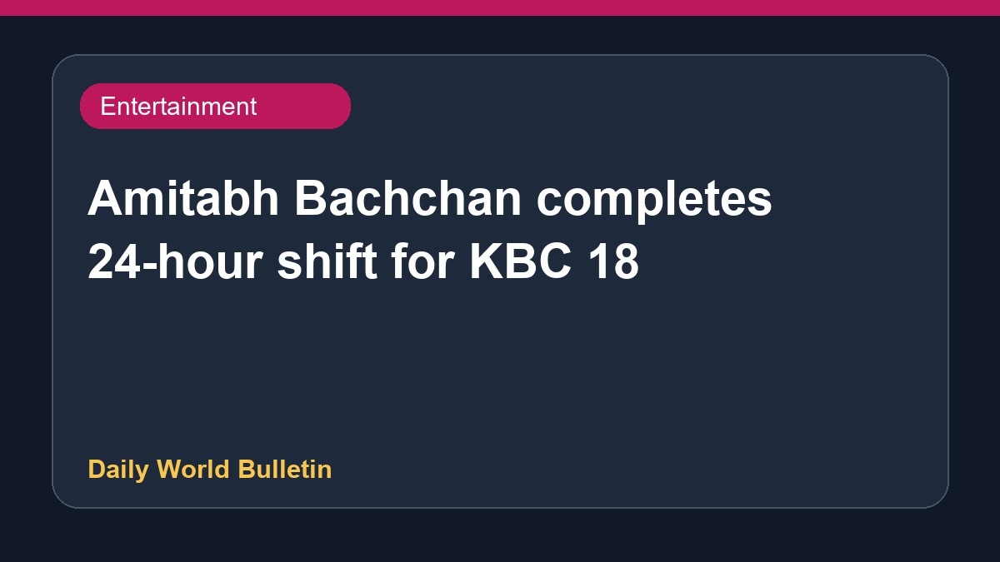

Amitabh Bachchan completes 24-hour shift for KBC 18

Veteran actor Amitabh Bachchan recently worked a continuous 24-hour shift ahead of the premiere of Kaun Banega Crorepati Season 18. Sharing his experience on his official blog, the 83-year-old actor noted that being absent from his professional duties could lead to a replacement on the show. Meanwhile, the upcoming season has already secured over 25 sponsors prior to its official launch. The actor also expressed his deep gratitude to his fans for their continuous support and good wishes on his second birthday.
Original source: Entertainment Sources
Amitabh Bachchan pulls a 24-hour shift for KBC 18: ‘Missing it would mean job replacement’ - indianexpress.com ↗
Amitabh Bachchan pulls a 24-hour shift for KBC 18: ‘Missing it would mean job replacement’ - indianexpress.com ↗
Related News
 Entertainment
EntertainmentThe Odyssey crosses USD 1 billion at the global box office
 Entertainment
EntertainmentCharlie Chauhan Marries Cricketer Ramandeep Singh In Private Ceremony
 Entertainment
EntertainmentActor Avika Gor Hospitalised After Dengue Diagnosis
 Entertainment
Entertainment